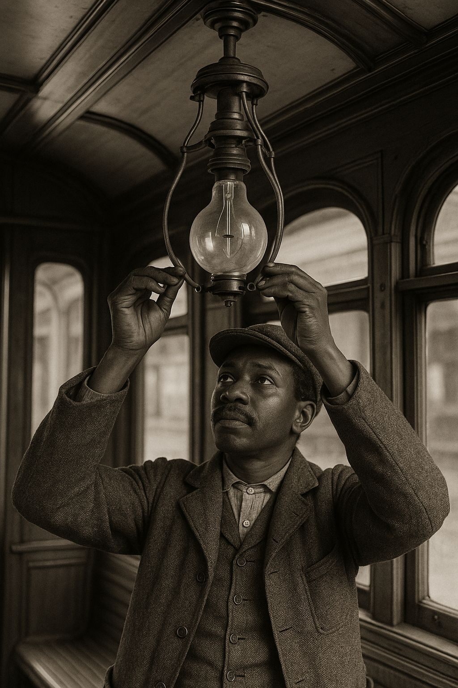
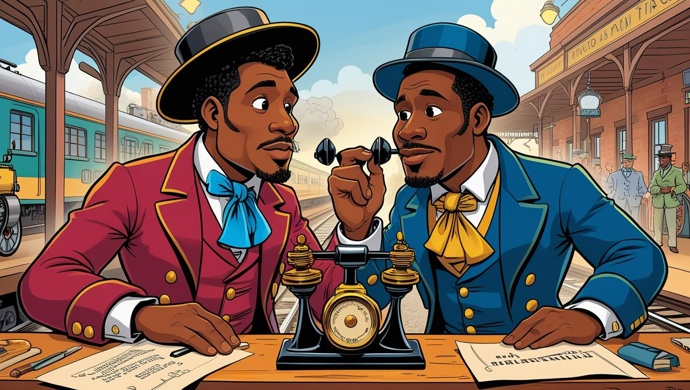

L'évolution de l'humanité de l'état de nature à l'état de culture passe certainement par des avancées scientifiques majeures. Qu'il s'agisse d'inventions qui ne nous servent plus mais qui ont servi de prémices à de nouvelles technologies, ou de choses que d'une certaine façon nous utilisons encore, l'humanité doit son confort d'aujourd'hui à de nombreux inventeurs et savants noirs.
Il est important de les mentionner non seulement pour ce qu'ils représentent — à savoir un tremplin pour la bonne marche de nos sociétés d'hier et d'aujourd'hui — mais aussi à cause des conditions dans lesquelles ces inventions et avancées scientifiques ont été réalisées. Des conditions difficiles pour les Noirs.
Dans son livre Inventeurs et savants noirs, Yves Antoine met en lumière plusieurs personnes noires qui ont marqué les domaines scientifiques et techniques. Voici une sélection de dix contributions majeures.
Nouvelle méthode de conservation des aliments — Lloyd Augustus Hall (1894–1971)

Lloyd a amélioré le processus de salaison des viandes en développant une nouvelle méthode appelée « fast-drying ». Cette technique consistait à mélanger du chlorure de sodium avec des nitrites et des nitrates de sodium puis à évaporer rapidement le mélange. Il en résultait des cristaux permettant une conservation optimale des aliments.
Mousse ignifuge pouvant combattre le feu — Percy Lavon Julian (1899–1975)
Au début des années 1940, Julian développa une mousse ignifuge capable de combattre le feu. Cette mousse fut utilisée lors de la Seconde Guerre mondiale, permettant à plusieurs soldats de garder la vie. Son procédé consistait à isoler des protéines de soja à partir de résidus de tourteau de soja.
Synthèse des phéromones d'insectes — Bertram Oliver Fraser-Reid (1934–2020)
Professeur à l'université de Waterloo dans les années 1970, Fraser-Reid a dirigé un groupe de recherche qui s'est concentré sur la synthèse de produits chiraux, notamment les phéromones d'insectes. Cette approche a permis de mieux gérer les populations d'insectes nuisibles qui ravageaient les forêts canadiennes.
Support spécial pour les globes en verre des lampes à arc — Lewis Howard Latimer (1848–1928)

En 1882, Lewis a inventé un support spécial pour les globes en verre des lampes à arc. Il construisit un système à ressort permettant de bien tenir les globes par le haut, les rendant faciles à retirer et à replacer.
Transmetteur téléphonique — Granville T. Woods (1856–1910)
Granville a breveté en 1884 un transmetteur téléphonique plus clair et plus puissant que les précédents. Son innovation permit de transmettre le son d'une manière nette, en particulier sur les longues distances.
Télégraphie téléphonique — Granville T. Woods
Granville a inventé un système appelé télégraphie multiplexée qui combine télégraphie et téléphonie. On pouvait envoyer plusieurs messages sur une seule ligne électrique, réduisant considérablement les coûts.
Télégraphie pour chemin de fer — Granville T. Woods

Granville a inventé un système qui permettait aux trains et aux gares de communiquer entre eux de manière rapide et sécurisée, facilitant la coordination du trafic ferroviaire.
Régulateur pour stimulateur cardiaque — Otis Boykin (1920–1982)
Otis a inventé un régulateur pour stimulateur cardiaque, un dispositif électronique qui aide à contrôler le rythme des pacemakers pour maintenir un battement cardiaque stable chez les patients victimes de troubles du rythme.
Conservation par hypothermie du rein — Samuel L. Kountz (1930–1981)
Chirurgien spécialisé en greffe rénale, Samuel contribua à développer une méthode permettant de conserver le rein plus de cinquante heures après son extraction, augmentant considérablement les chances de réussite des transplantations.
Laserphaco Probe — Patricia Bath (1942–2019)
Patricia est une ophtalmologue américaine qui a inventé le Laserphaco Probe, un appareil utilisant un laser pour enlever les cataractes de manière plus sûre et précise.
Ces dix innovations ne représentent qu'une fraction des contributions scientifiques et techniques apportées par des personnes noires à travers l'histoire. Beaucoup d'autres noms ont été effacés ou minimisés par un système qui a longtemps privilégié certains récits au détriment d'autres.
En lisant intégralement le livre d'Yves Antoine, on constate l'ironie d'une situation dans laquelle des Noirs s'efforcent d'aider l'humanité à évoluer, alors même que leur couleur de peau pousse les sociétés occidentales à repousser ou banaliser leur savoir-faire — malgré leur génie évident.
Cette absurdité devrait-elle nous faire rire ou nous faire pleurer ? Reste à savoir... Quoi qu'il en soit, mettre en lumière ces contributions nous aide à nous rappeler que le génie n'a jamais été affaire de couleur ou de sexe, mais surtout de bon sens et peut-être d'un peu de passion.
Source
Antoine, Yves. Inventeurs et savants noirs. L'Harmattan.